Made by a firefighter
Learning your district shouldn't depend on luck
A new member is expected to know the first-due well enough to go from quarters to any box without a map: read the address, picture the block, call the turns. Most of us learn it the slow way, from the run book, a few drives, and whatever calls happen to come in.
Box Alarm was built at Engine 15 to make that faster and more complete. It puts the company's own information book, a source-verified map of the district and a driving simulator in one app, and it adds a study system that decides what to practice next.
New: The Guide
A study partner for your whole response area
The Guide teaches every run in the district, starting from quarters. It borrows the method London cab drivers use to learn their city, called "the Knowledge": you call runs over out loud, check yourself turn by turn, drive them, and go look at the ground.
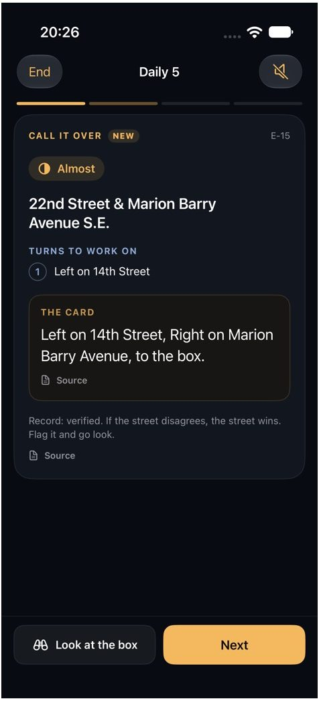
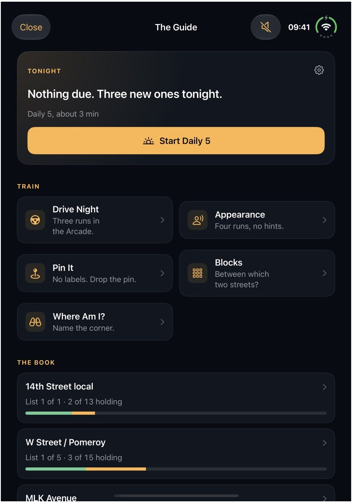
Spaced practice, not cramming
Runs you miss come back soon. Runs you know come back less often. Due runs come first each day, then a couple of new ones, so the whole district gets covered over time.
Your ground, your pace
Pick which districts to study, starting with your own first-due. Progress shows per district and per street in the book. There are no streaks or points.
The drills
Six ways to learn the same ground
Five quick runs a day
Due runs first, then something new. Each one is called over out loud and checked turn by turn against the book's own wording. A good fit for the start of a shift or the end of one.
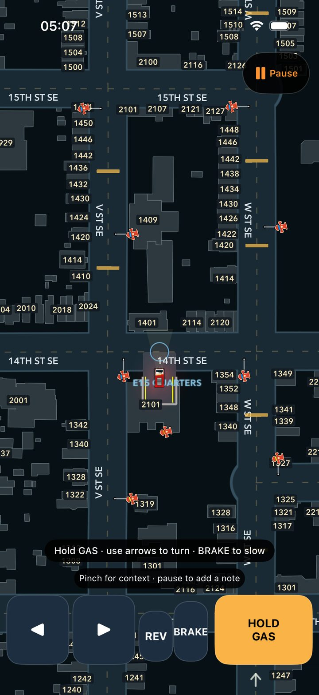
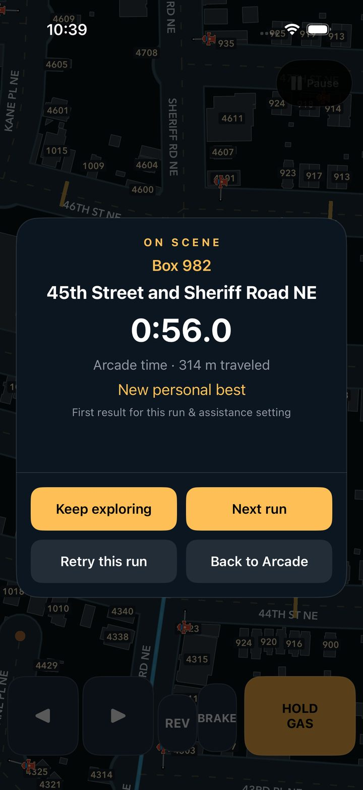
Three runs in the Arcade
Straight into the truck with no menus. Route help fades after you've driven a run twice. Places with no run card become find-your-own-way drives. You get a debrief after each run.
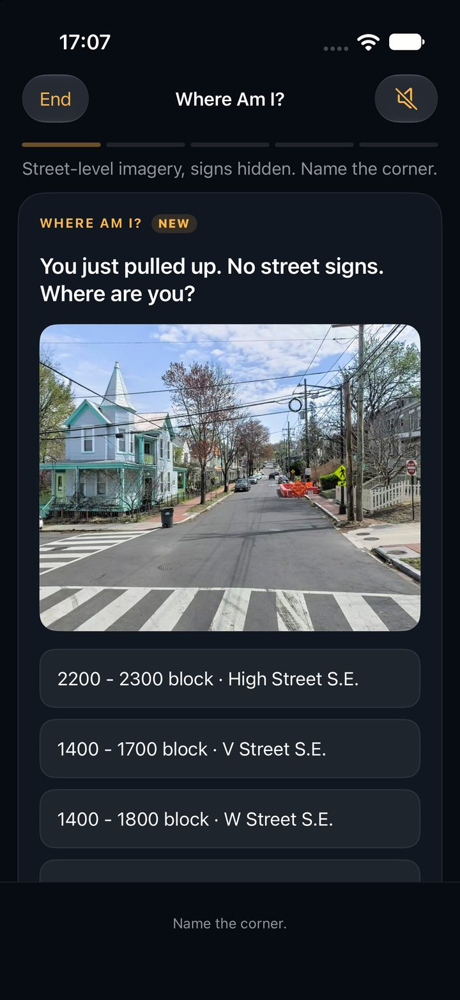
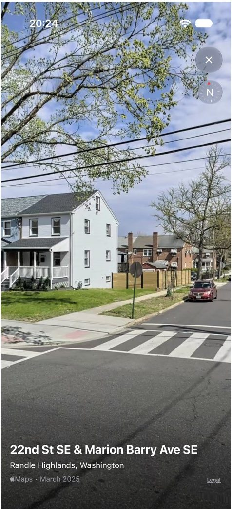
You just pulled up. No street signs.
A street-level photo with the labels hidden. Name the corner or the block, then look around the real intersection to see what you missed: the plug, the access, the way out.
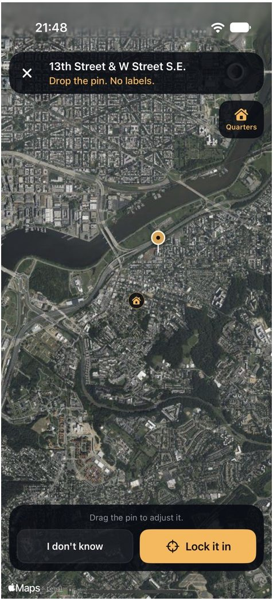
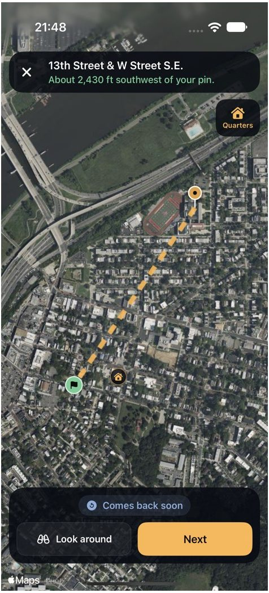
Drop the pin. No labels.
Satellite imagery only, with no street names. Start from quarters, pan and zoom, and put the pin where the corner is. The answer shows how far off you were and in which direction.
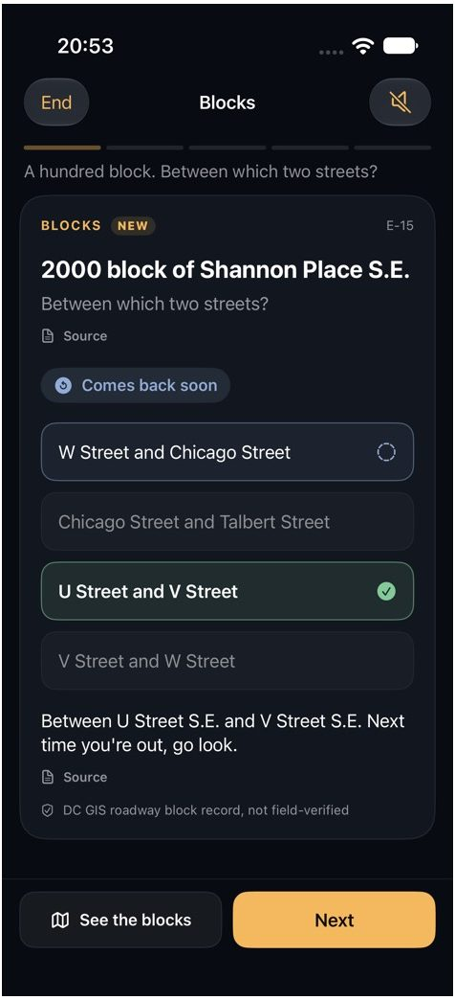
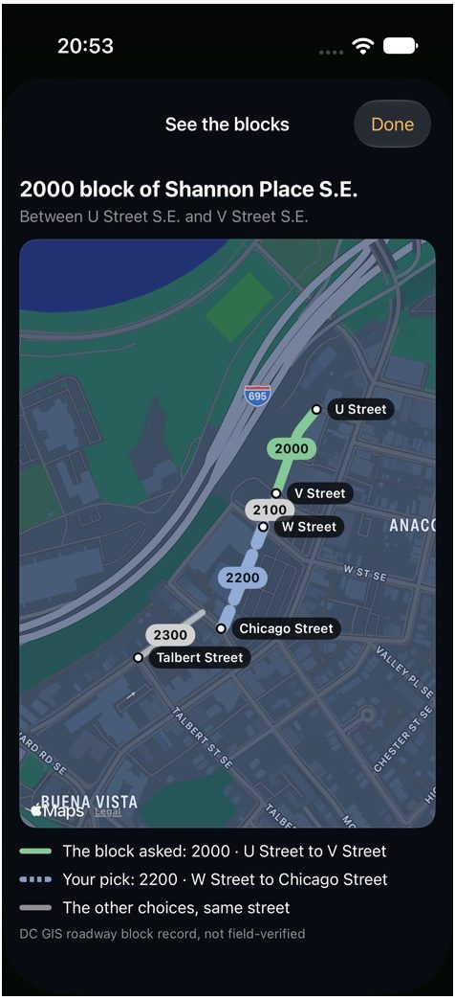
Which two streets?
A hundred block is named; you pick the cross streets. "See the blocks" draws the block that was asked next to the one you picked, so the correction is on the map, not just in a sentence.
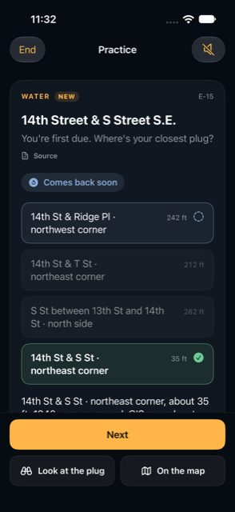
You're first due. Where's your closest plug?
Pick the nearest hydrant from a short list, with distances shown on the answer. The app says plainly that the hydrant is a GIS record and has not been checked in person.
Every answer leads back to the ground
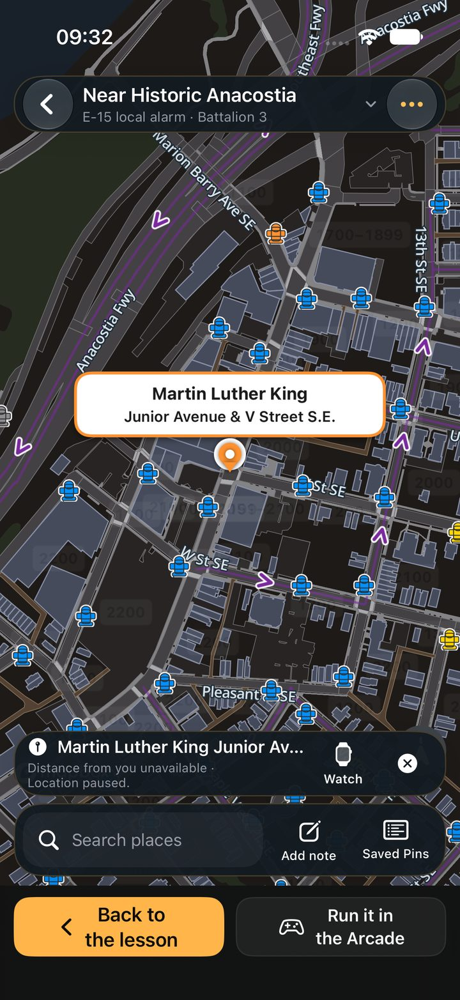
From any lesson you can step out to check your work and come straight back.
- Look at the box opens street-level imagery at the location.
- On the map shows it on the Box Alarm map with hydrants, block numbers and one-way streets.
- Run it in the Arcade drives it from quarters.
- Back to the lesson is always one tap away.
Live map
The district, drawn for fire service work
The home screen is a map of all of DC built for firefighters, not drivers. It is drawn from DC open data and the department's own references, with each layer traced to its source.
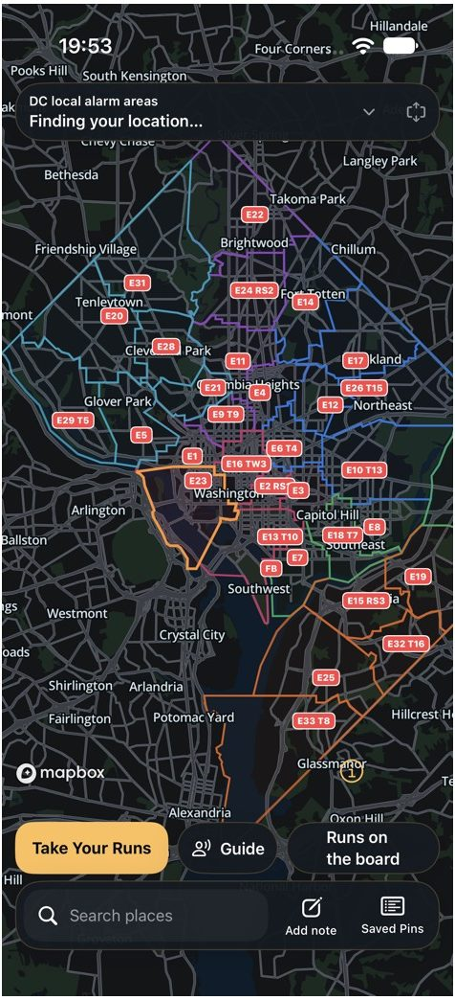
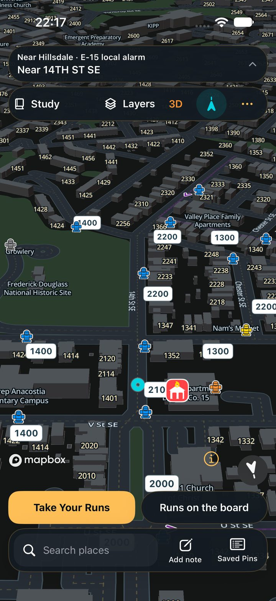
What's on it
- Local alarm areas and battalions
- Hydrants with their recorded flow
- Fire alarm boxes and company routes
- Block numbers and one-way streets
- Buildings, parking and alleys, plus a satellite view
Field notebook
Hold a place on the map to save a pin with a note or photo: a hidden standpipe, a tricky access, a bad turn. Pins and notes stay on your device.
Search any DC address and see whose local alarm it's in.
Take Your Runs
Drive the run before you ride it
The Arcade is a top-down driving simulator on real DC streets. You start in the bay at quarters and drive to a real box or address, with the run card's turns as your guide.
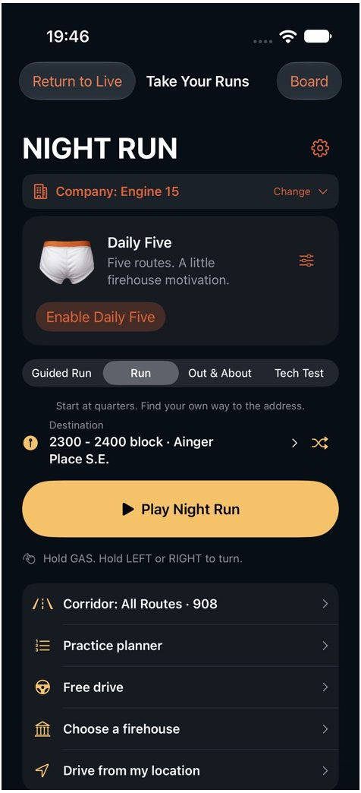
Four modes
- Guided Run: the book's turns, step by step.
- Run: start at quarters and find your own way.
- Out & About: start from wherever you are.
- Tech Test: no help at all, then pass or fail with every missed turn named.
Real streets, checked
About 3,900 guided routes across the 3rd Battalion and its neighbors. Every route is checked so the truck can actually reach the box. Routes that can't be verified are held back, not guessed.
Runs on the board
Turn real calls into practice
Recent calls for your units arrive on the board. Open one to see whose local alarm it's in, look at it on the map, and run it from your own quarters.
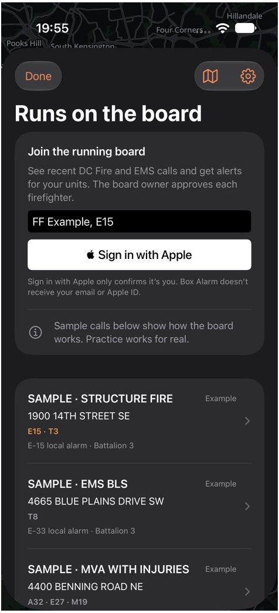
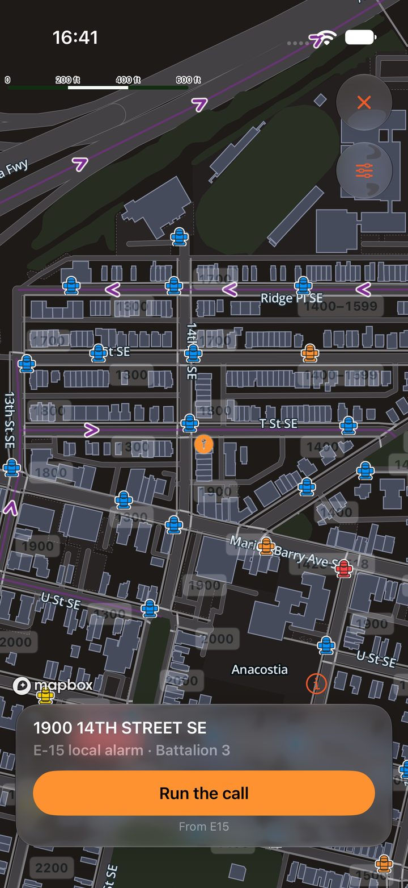
Built for every screen
iPhone and iPad
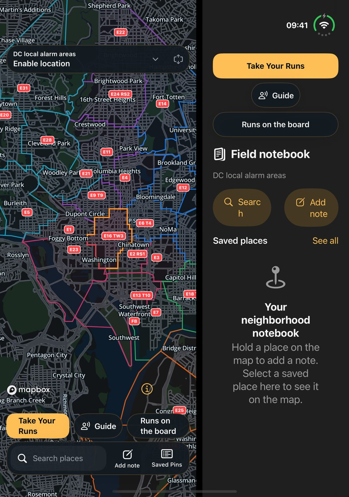
On larger screens the map and the controls sit side by side. On iPad you can drive the Arcade with a keyboard. A Mac version is in testing.
Screenshots are from the current private beta and test builds.
How it's built
Accurate first, or it doesn't ship
The book's own words
Route wording is copied exactly from the company information book, and every card links back to its source. The Guide never makes up a route or a building detail.
Honest labels
When something comes from a records system rather than a check in the field, the app says so. If the street disagrees with the record, the street wins.
Tested data
Hundreds of automated checks cover the map, the routes and the study rules. Each company book is extracted twice independently and every disagreement is reviewed.
Private by default
Pins, notes and photos are stored on your device, and you can export or delete them from Settings. Sign in with Apple only confirms who is asking to join the board; Box Alarm doesn't receive your email or Apple ID.
What Box Alarm is not
Box Alarm is a learning tool. It is not dispatch, live incident status or approved response routing. It is an independent project built by a DC Fire and EMS member, not an official department product.
Bring your company's book
The Guide is built around Engine 15 today. The same system can be set up for any company with an information book. If you'd like it for your house, get in touch: 61.baroque.finial@icloud.com.